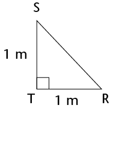

Die stelling van pythagoras
Stelling is ’n reël of ’n bewering wat deur redenering bewys is. Die stelling van Pythagoras is ’n reël wat net op reghoekige driehoeke. Die stelling is na die Griekse wiskundige Pythagoras vernoem.Pythagoras (569–475 v.C.)
Pythagoras was ’n invloedryke wiskundige. Soos baie Griekse wiskundiges van 2 500 jaar gelede, was hy ook ’n filosoof en ’n wetenskaplike. Hy het die baie bekende stelling, wat vandag as Pythagoras se stelling bekendstaan, geformuleer. Die stelling was egter al 1 000 jaar vroeër deur die Chinese en die Babiloniërs gebruik.
Die skuinssy is die sy teenoor die 90°-hoek in ’n reghoekige driehoek. Dit is altyd die langste sy.

- Bereken die oppervlaktes:
Vierkant A:
Vierkant B:
Vierkant C:
- Tel die oppervlakte van Vierkant B + en die
oppervlakte van vierkant C bymekaar:
- Wat merk jy op oor die oppervlaktes?
- Tel die vierkante. Wat is die lengte van die skuinssy?
- Bepaal die volgende:

Oppervlakte van A:
Oppervlakte van B:
Oppervlakte van C:
Oppervlakte van B + Oppervlakte van C:
- Wat merk jy op oor die oppervlaktes? Is dit soortgelyk aan jou antwoord in 1(c)?

- Wat is die oppervlakte van die vierkant wat
langs die skuinssy geteken is?
- Wat is die lengte van die driehoek se skuinssy?
Die stelling van Pythagoras se:
In ’n reghoekige driehoek is die oppervlakte van die vierkant op die skuinssy gelyk aan die som van die oppervlaktes van die vierkante op die reghoeksye van die driehoek. Dus:
\((\text{Skuinssy})^2=(\text{Sy} 1)^2 + (\text{Sy} 2)^2\)


- Bewys dat dit ’n reghoekige driehoek is
Merk die regte hoek op die tekening


- 7, 9 en 12
- 7, 12 en 14
- 16, 8 en 10
- 6, 8 en 10
- 8, 15 en 17
- 16, 21 en 25
 wortelvorm genoem.
wortelvorm genoem.Wortelvorm
\(\sqrt{5}\) is ’n voorbeeld van ’n getal in wortelvorm.
\(\sqrt{9}\) is nie ’n wortelvorm nie, want jy kan dit vereenvoudig:
\(\sqrt{9}\) = 3
Voorbeeld:


- 


- Bereken die lengte van die sye van âACH. Let op dat al drie sye van die driehoek hoeklyne van reghoeke is. AC is in reghoek ABCD, AH is in ADHE en HC is in HDCG.
- Is \(\triangle\)ACH reghoekig? Verduidelik jou antwoord.


- \(\triangle\)ABC het AB = 12 cm, BC = 18 cm
en \(\hat{A}\) = 90\(^\circ\).Bereken AC.
- \(\triangle\)DEF het \(\hat{F}\)= 90\(^\circ\), DE = 58 cm en DF = 41
cm. Calculate EF.
- \(\triangle\)JKL het \(\hat{K}\) = 90\(^\circ\), JK = 119 m, KL = 167 m.
Breken JL.
- \(\triangle\)PQR het PQ = 2 cm, QR
= 8 cm en \(\hat{Q}\) = 90\(^\circ\). Breken PR.
- ’n Leer wat 5 m lank is word teen ’n muur gesit. Die onderkant
van die leer is 1 m van die muur af weg. Hoe ver teen die muur op
sal die leer reik? Rond jou antwoord tot twee desimale plekke af.

- As die leer 4,5 m hoog teen die muur opreik, hoe ver van die muur af is dit neergesit? Rond jou antwoord tot twee desimale plekke af.
Stelle natuurlike getalle wat as die sye van ’n reghoekige driehoek gebruik kan word staan as Pythagoriaanse drietalle,bekend, byvoorbeeld:
3-4-5 ; 5-12-13 ; 7-24-25 ; 16-30-34 ; 20-21-29
Jy kan hierdie drietalle uitbrei deur veelvoude van hulle te bepaal. Drietalle uit die 3-4-5 stel sluit byvoorbeeld die volgende in:
3-4-5 ; 6-8-10 ; 9-12-15 ; 12-16-20
Daar bestaan baie ou geskrifte waarin Pythagoriaanse drietalle opgeteken is. Die Babiloniërs het tussen 1900 en 1600 v.C. reeds baie groot Pythagoriaanse drietalle bereken, soos byvoorbeeld 1 679-2 400-2 929.
1 679-2 ; 400-2 929.
Hoeveel Pythagoriaanse drietalle kan jy bepaal? Wat is die grootste een wat jy kan bepaal wat nie ’n veelvoud van ’n ander een is nie?

AB=........eenhede
CD=........eenhede
EF=........eenhede
GH=........eenhede
- Bereken die oppervlakte van reghoek KLMN.

- Bereken die omtrek van
\(\triangle\)KLM.

- Wat is die lengte van QD?
- As CP = 4,2 cm, bereken die lengte van PQ.
- Bereken die lengte van AQ en die oppervlakte van âAQD. \(\triangle\)AQD.

- Bereken die oppervlakte van \(\triangle\)MNR.
- Bereken die omtrek van MNST.
Pythagoras se stelling werk net vir reghoekige driehoeke, maar ons kan dit ook soos volg gebruik om uit te vind of ander driehoeke skerphoekig of stomphoekig is:
- As die kwadraat van die langste sy minder as die som van die kwadrate van die twee korter sye is, die grootste hoek skerp.
Byvoorbeeld in 'n 6-8-9 driehoek: \(6^{2}\) + \(8^{2}\) = 100 en \(9^{2}\) = 81.
81 is minder as 100 \(\therefore\) die 6-8-9 driehoek is skerphoekig.
- As die kwadraat van die langste sy meer as die som van die kwadrate van die twee korter sye is, is die grootste hoek stomp.
byvoorbeeld, in 'n 6-8-11 driehoek: \(6^{2}\) + \(8^{2}\) = 100 en \(11^{2}\) = 121.
121 is meer as 100 \(\therefore\) die 6-8-11 driehoek is stomphoekig.

Voltooi die tabel. Dit is op die skets hier regs gebaseer. Besluit of elke driehoek wat beskryf word reghoekig, skerphoekig of stomphoekig is.
|
\(a\) |
\(b\) |
\(c\) |
\(a^{2}\) + \(b^{2}\) |
\(c^{2}\) |
Vul =, > of < |
Soort driehoek |
|
3 |
5 |
6 |
\(3^{2}\) + \(5^{2} = 9 + 25 = 34\) |
\(6^{2} = 36\) |
\(a^{2}\) + \(b^{2} \lt c^{2}\) |
Skerphoekige |
|
2 |
4 |
6 |
\(a^{2}\) + \(b^{2}\) ........... \(c^{2}\) |
|||
|
5 |
7 |
9 |
\(a^{2}\) + \(b^{2}\) ........... \(c^{2}\) |
|||
|
12 |
5 |
13 |
\(a^{2}\) + \(b^{2}\) ........... \(c^{2}\) |
|||
|
12 |
16 |
20 |
\(12^{2}\) + \(16^{2} = 144 + 256 = 400\) |
\(20^{2} = 400\) |
\(a^{2}\) + \(b^{2}\) ........... \(c^{2}\) |
Reghoekige |
|
7 |
9 |
11 |
\(a^{2}\) + \(b^{2}\) ........... \(c^{2}\) |
|||
|
8 |
12 |
13 |
\(a^{2}\) + \(b^{2}\) ........... \(c^{2}\) |
- Skryf Pythagoras se stelling op die manier neer waarop jy dit die beste verstaan.
- Bereken die lengtes van die onbekende sye in die volgende driehoeke. Los die
antwoorde in wortelvorm indien nodig.
-
- ABCD is 'n parallelogram.
- Bereken die omtrek van ABCD.

- Bereken die oppervlakte van ABCD.
- Bereken die omtrek van ABCD.